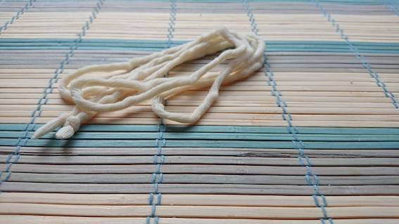
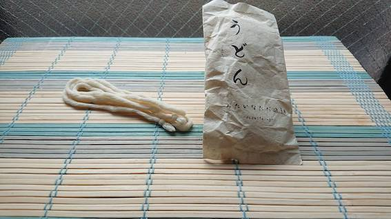
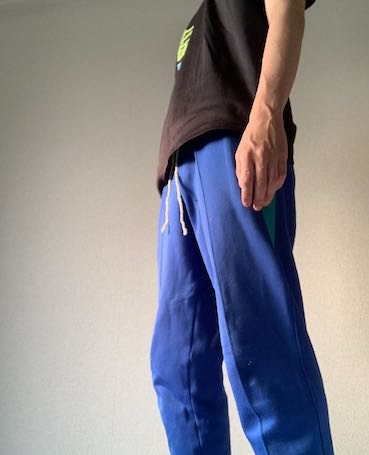
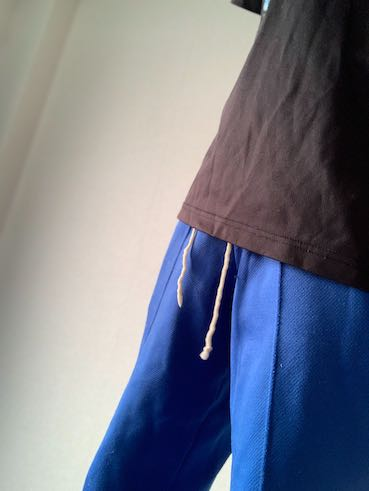
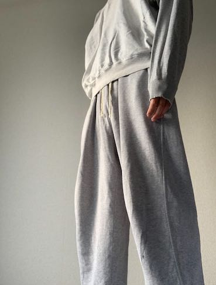

うどんのような紐

   
コンセプト
中学時代、ジャージから出た紐のことを、「うどん」と呼んでいた。
調べてみると、その風習は僕の地域だけというわけでもなく、あちらこちらにその風習が点在するようだった。
「うどん」という文化が日本にはあり、同じ日本にいるだけで、
示し合わせたわけではなく同じ言語として存在していることに面白みを感じた。
食文化と紐文化を融合しコンテンツ化することで点在している風習を繋げる。
商品の使い方
パーカーの紐にする
ターゲットユーザー
点在している紐のことを「うどん」と呼ぶ人達
ムービープロトタイプ
こねる動画
茹でる動画１
制作プロセス